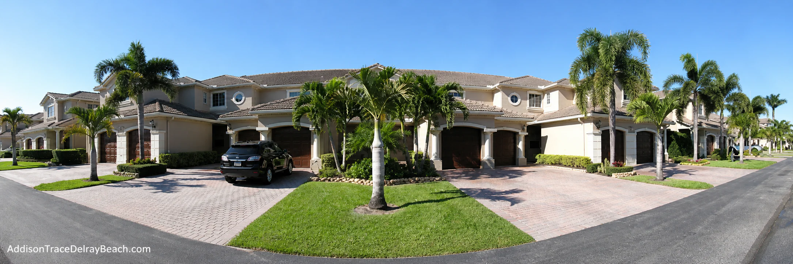
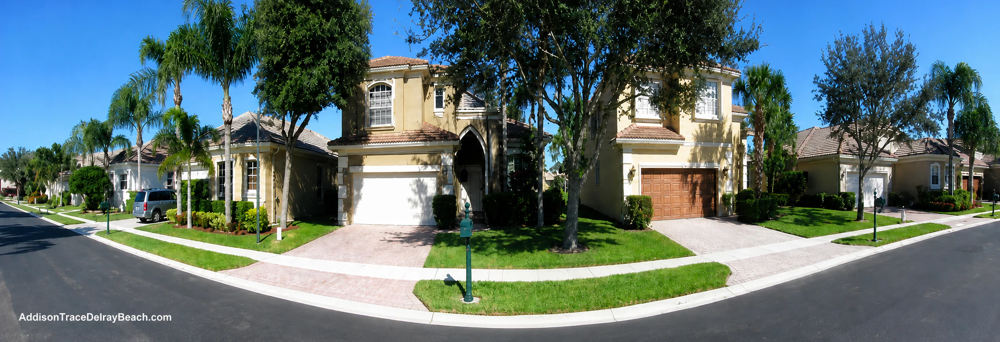

A range of home styles
Choose from two bedroom coach homes or three and four bedroom single family residences, depending on current availability.
Gated living in Delray Beach
Addison Trace is an established neighborhood of single family homes and coach homes with recreation close by and the best of Delray Beach within easy reach.


Why buyers consider Addison Trace
A quiet residential setting with useful amenities and convenient access to the places residents visit every day.
Choose from two bedroom coach homes or three and four bedroom single family residences, depending on current availability.
Enjoy the community pool, heated spa, tennis court, fitness center, and private recreation area.
Live near Delray Medical Center, everyday shopping, Atlantic Avenue, and the Atlantic coast.

Homes in Addison TraceCurrent opportunities
Addison Trace was built from the late 1990s through the early 2000s. Many single family homes offer three or four bedrooms, two car garages, and approximately 1,800 to 2,400 square feet of air conditioned living space.
Listings and prices can change daily. Use the current listing page or speak with Brenda Brooks for the latest information.
Life inside the community
The private recreation area gives residents an easy place to swim, exercise, play tennis, or spend a quiet afternoon.

Delray Beach, Florida 33484
Addison Trace is located off Linton Boulevard between Military Trail and Jog Road. Downtown dining and shopping, medical services, and the ocean are all within easy reach.
Open map and directionsTake Linton Boulevard west to Sims Road, then turn left into the community.
Exit at Atlantic Avenue and head east. Turn right at Jog Road, then left on Linton Boulevard and right at Sims Road.
Good to know
Property and community details should always be confirmed before making a decision.
The community includes coach homes and single family residences. Bedroom counts and availability vary by property.
Community information includes a recreation center, pool, heated spa, tennis court, and fitness center.
Use the current listings link above or call Brenda Brooks at One Step Ahead Realty for updated availability and showing information.
No. This is an independent real estate information website and is not affiliated with the Addison Trace community association.

A simple next step
Call or text Brenda Brooks, Broker at One Step Ahead Realty, to ask a question or arrange a convenient time to visit.